Model Calibration and Parameter Estimation with JuliaSim Model Optimizer
TODO: for blog posts do acronyms as in here.
Some time ago I attended a remote workshop titled "Model Calibration and Parameter Estimation with JuliaSim Model Optimizer" by the JuliaHub team, specifically Jacob Vaverka and Dr. Christopher Rackauckas.
JuliaSim is a cloud-hosted platform for physical simulation. It combines a vast array of bleeding edge SciML techniques, acausal equation-based digital twin modeling and simulation and is powered by the Julia programming language. It is preview-only software in the time of writing this post (December 2022).
JuliaSim produces surrogates of blackbox (and regular) dynamical systems using Continuous Time Echo State Networks (CTESNs). This technique allows, amongst other features, for implicit training in parameter space to stabilize the ill-conditioning present in stiff systems.
You can leverage the surrogates to accelerate the process, there's a variety of techniques for quantifying uncertainty and noise (see the virtual populations below). You can use JuliaSim for parameter estimation and optimal control, which is what this post is about. There's the so-called Model Library, a collection of acausal (equation-based) components with pre-trained surrogates of models that are ready to use. You can thus discover and import/exchange various models, and combine yours with pre-built models and digital twins. Lastly, there's specialized numerical environments available for use upon demand. Everything can happen on the JuliaHub cloud-based IDE.

If you want to build models, you can use the pre-made model libraries, e.g. CellMLPhysiome.jl and SBMLBioModels.jl. You can use the Catalyst.jl and ModelingToolkit.jl GUIs. If you want to generate models using existing data, you can use a Digital Twin generator. If you want to generate data using existing models, you can use a surrogatizer and more:


ModelOptimizer: package methodology to perform model calibration, analysis, HPC environment, user-friendly manner. Robust and automated framework to scale large and complex models

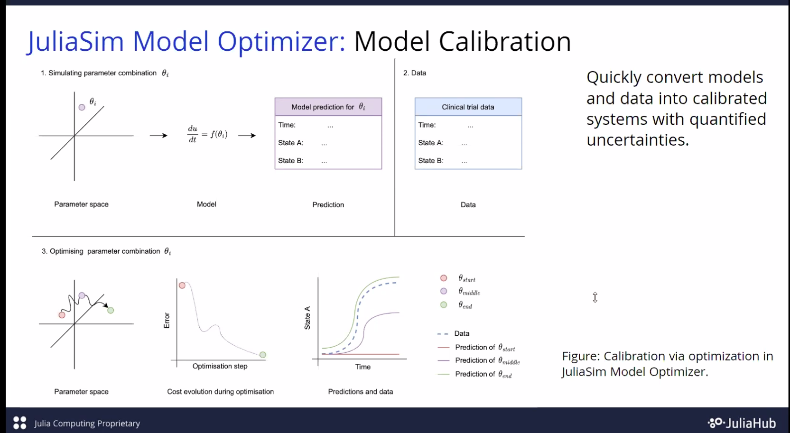
It can be difficult to run optimization techniques in distributed fashion, so you're oftentimes constrained to serial implementations which is costly from many aspects. Some model parameters may be unidentifiable from the data.
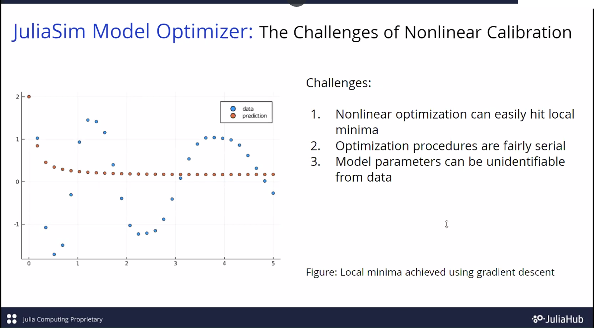
To address the first challenge — how do we avoid local optima? Leverage specialized methods from Model Optimizer. There are many calibration methods available, some of which are below. Which one you choose is going to depend at the specific problem at hand. To address the second challenge — how do you do effective parallelism on a particular strategy that you're deploying, how do you leverage large-scale cloud compute systems to solve these problems? The proper strategy selection plays a big role here. You can enable parallelism with certain strategies. Multiple shooting is one example where if it's an effective strategy it helps you break out the serial of execution. Some of the many available techniques are more amenable to distributed compute.
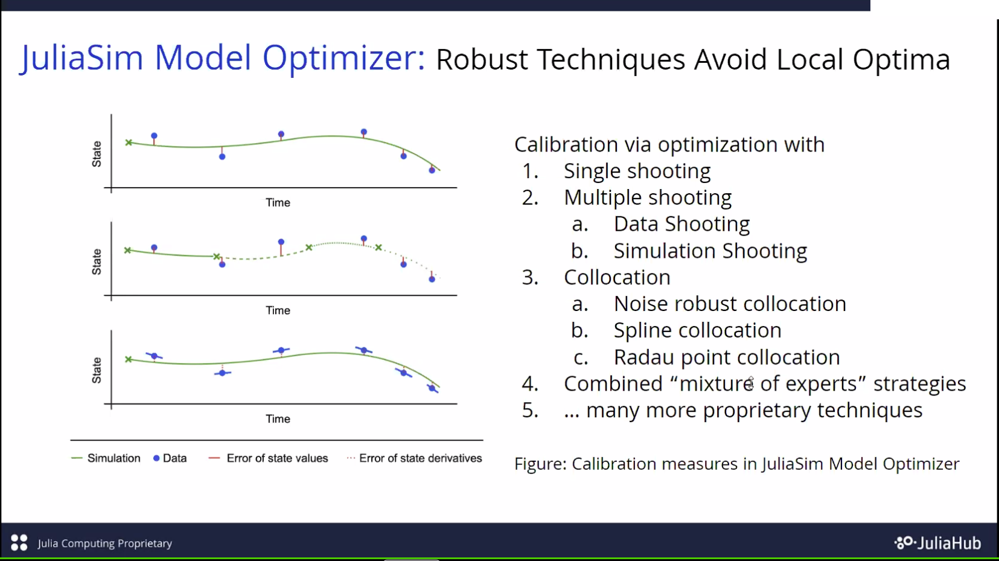
To address the third challenge — how do you quantify the uncertainty in the fit? with introducing the concept of virtual populations. Virtual populations are sets of parameters which sufficiently fit all trials, all observations. A trial is a different variation of the model which can be ran, it describes an experiment. It's a data observation. We can have collections of trials, multiple trials. With the collection we can define multi-simulation optimization problems.

This is the problem. Before we really get into seeing this in action, we need to discuss different modeling paradigms. How do we create these simulations and have something that we can apply these model optimizer techniques to?
Model paradigms¶
Causal Modeling¶
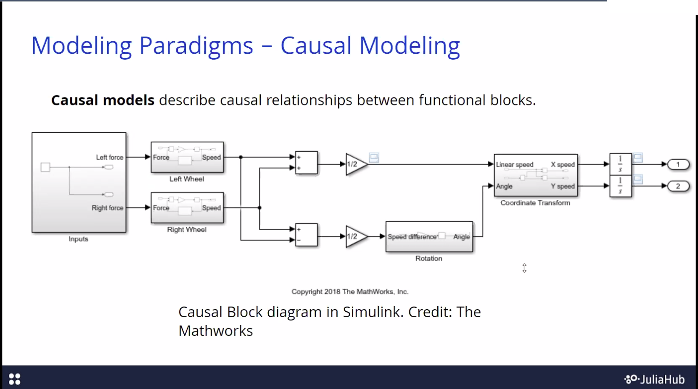
So, in causal modeling, we describe the causal mechanisms of a system. The way that this works is we provide clear rules for the interactions between functional blocks. We can make an analogy to imperative programming, we're worried about the flow of computation. This leads us nicely into
Acausal modeling¶

Describe the behavior and the properties of the model components and then models are built up out of the composition of the components. The overall dynamics of the model fall out of the cumulative behavior of the composition. Here, let's employ the declarative programming analogy, we only worry about the connections and the relationships between these functional blocks, we don't want to frame the problem particularly in terms of the flow of computation that has to happen, we want to think instead about individual components and the relationships between one another.
Acausal modeling can be expressive. We can think like scientists and engineers and we're not limited in framing the problem only in terms of how to compute the results. We can be concise, so we can build large-scale models by connecting well-tested components. We can be reusable in that we can bring these well-tested components and entire component models with us to build new systems.
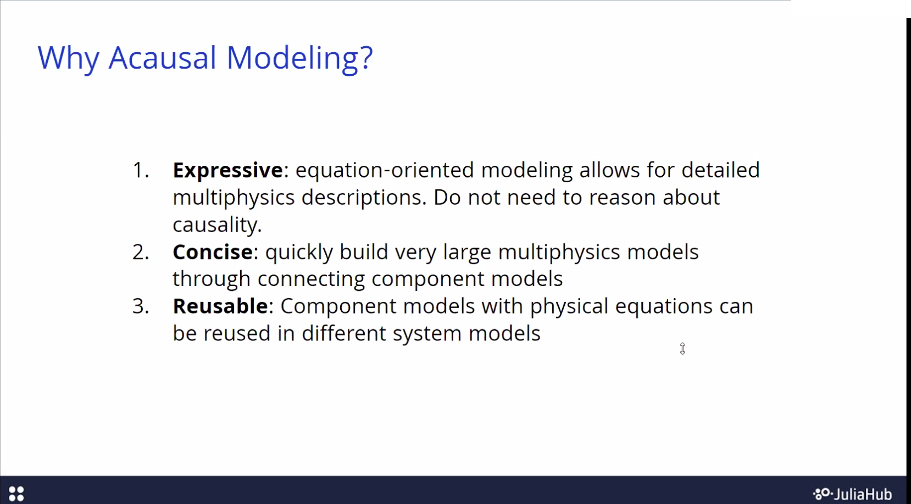
ModelingToolkit.jl is a Julia acausal modeling framework (TODO: ModelingToolkit.jl) and it will allow us to be expressive and concise when we write our DE models. It will also enable us to reuse these models so we can automatically rearrange equations for better stability. We're gonna get some extra perks here. We're gonna get optimal code by default, without having to worry about the most optimal way to compute these things we just worry about the mechanics and then we get the optimal code for free. The code will also be parallelizable by default.
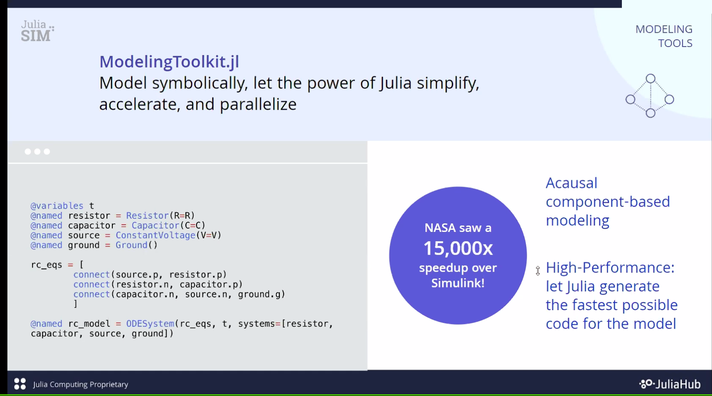
We're also going to use some components from the ModelingToolkit Standard Library (TODO: ModelingToolkit.jl). So, speaking of reusability, we're gonna leverage some pre-built components from the standard library and this is going to help us dive directly into the engineering and not focus as much on the math and the programming of building all these things up from scratch. So this is exactly the intended purpose of this library.
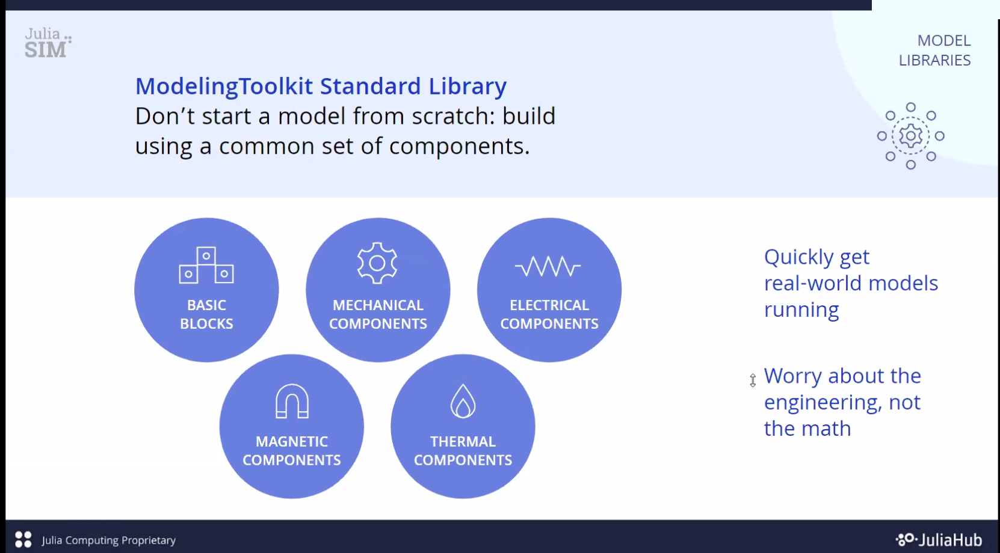
A Chua circuit is a simple electrical circuit (TODO: check GitHub) that exhibits chaotic behavior. It's easy to construct and it's a classic real world example of what a chaotic system can look like. In order to get this chaotic behavior, we need to satisfy a couple requirements. We need at least one nonlinear element if you look at the diagram, and that's what $N_R$ stands for, it's going to be our nonlinear resistor. We need at least one locally active resistor, also $N_R$ in the diagram, and then we need at least three energy storage elements, so that's where the capacitors $C_1$ and $C_2$ and the inductor $L$ come into play. This is the diagram we're going to be building.
First, we load some packages. JuliaSimModelOptimizer is the first package. We're going to be pulling from the Electrical module from the standard library, and we have some various packages here.
First we need to define the components that are not readily available in the standard library (TODO: SynBio link!). So first we need a parameter for time, and then we can build the nonlinear resistor. So this is the code representation of exactly what was shown in the diagram.
You can see we're using some components from the electrical module, and then it's pretty straightforward to describe the various equations that we want to govern this nonlinear resistor's behavior. There's a couple nested ifelse statements which employ different equations based on different conditions of the nonlinear resistor. What we return from this function here is an ODESystem which is going to help us create the component. NonlinearResistor was the only component we needed to build ourselves.
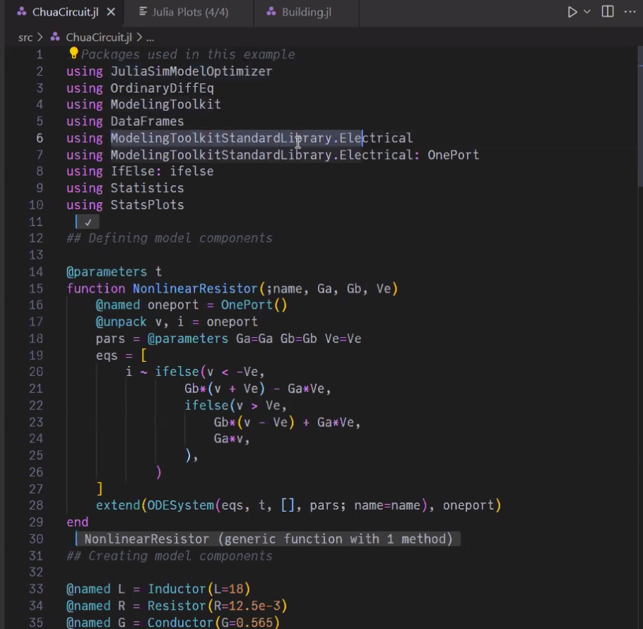
So, after defining model parameters not readily available in the model library, we can now create the model components (using the standard library components and the nonlinear resistor we built).
Inductor, Resistor, Conductor and Ground are all from the electrical module of the standard library. We can create the model components with the same labels we saw on the diagram.
Once we have each of these elements, we can start defining the relationships between the components. That's what you see in the connect statements.
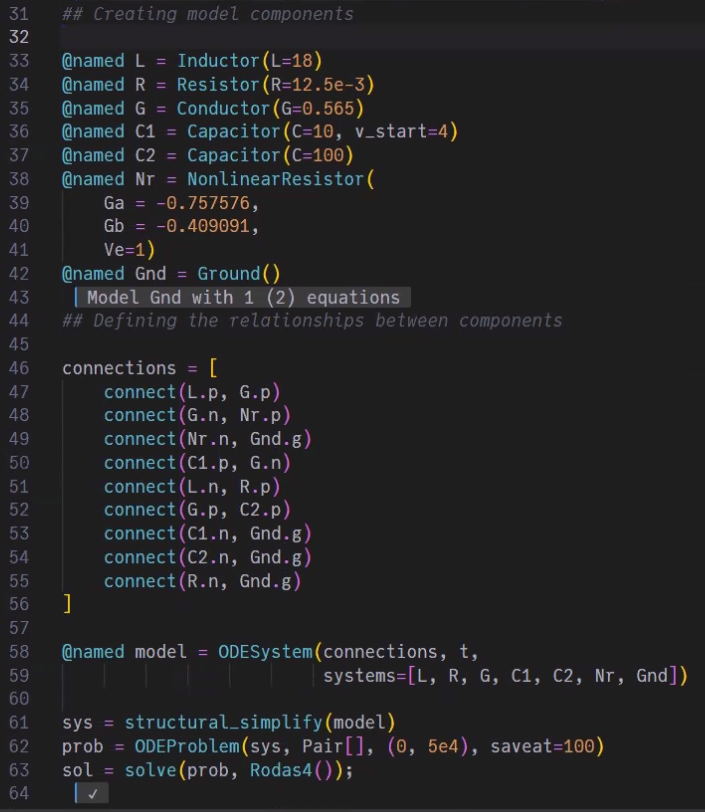
When talking about not necessarily having to worry about writing the optimal code, but instead just describing the relationships between each of the components, this is what you see here. We can connect the inductor to the ground, the nonlinear resistor to the ground, the capacitor to the ground, we can do all of this with connect statements and at the end we feed all of these connections, so all of these equations along with the ODESystem that we've created, put it in an element called model, and that's going to give us everything needed.
But! We didn't pay close attention at all in making sure this runs in an optimal way, so that's where structural_simplify is a very handy tool. We can pass our model into this structural_simplify call. It is going to simplify the algebraic equations of the system, so wherever possible, it's going to not make redundant calls, it's going to find the fastest method to solve this model for us. TODO: look into this.
So if we just call it we can get the optimal version of the model for free.
After we get that, we can create our ODEProblem run it over a particular timespan, and give it some instructions to save at certain times (mostly for plotting later), and then we can solve the problem.
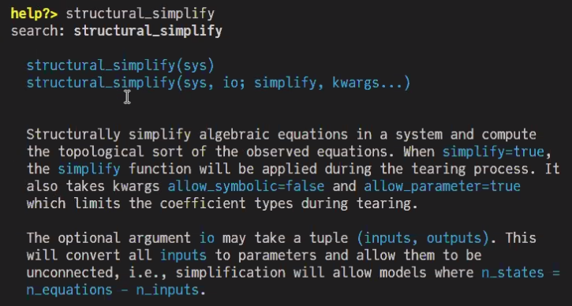
Now we can move on with defining the inverse problem (up to this problem model optimizer wasn't needed. Add things on that and on what the inverse problem is).
The first step here is typically we would load the experimental data. Typically you might see something here like using the CSV package read in a file where i had all the experiment data saved and then i want to tie this data back to the model.
In this example we're going to use the solution that we got directly above from calling solve on our problem.
We have everything needed to define a trial. A trial is the model plus our data.
We just pass in the data, the system and tell it what time to run over.
Now that we have a trial, we can create the inverse problem.
We're specifying the parameters that we want to optimize and we also specify the search space we wanna look for.
We're passing a collection of trials, granted it's a single trial in this collection, but it's still a collection. We pass the model.
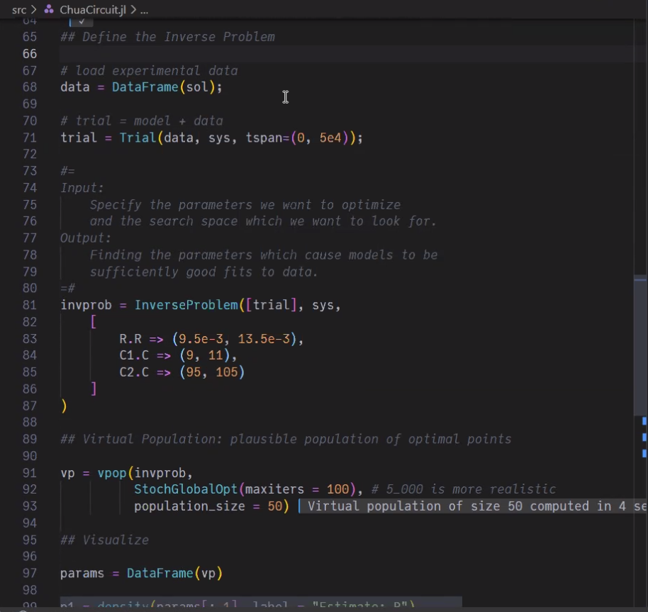
Then, we pass the search space. You can see here the model parameter, the lower and the upper bound for each. What it's gonna do, is it's going to find the model parameters in the system, it's gonna find the parameters which cause the model to be a sufficiently good fit to all data, all data here being the collection of trials that we've passed.
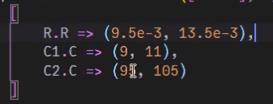
Since that's done, we move on to the next block here which is the virtual population. It's the plausible population of optimal points. So, creating this virtual population is as easy as feeding in the inverse problem, passing an optimization algorithm, in this case we're using the stochastic global optimization algorithm, we're gonna do a max iteration of 1000, 5000 is a much more realistic number to use.
This DataFrame is produced:

Note that when we defined our capacitors, C1 and C2 we passed in values for C.
You can see in the results of the virtual population (dataframe) there is parameter c, for c1 we passed in 10 you can see many of these values are right around 10. That's a good sign, it means we're getting close to that value, same thing for C2 which is at 100. This is an eyeball test.
We can then run these visualizations for a more clear way to see these results. We're going to create a single image which is a layout of three images and for each one we're gonna use a smooth density plot to show the virtual population. Then since we know the true value we can plot it too to use for comparison.
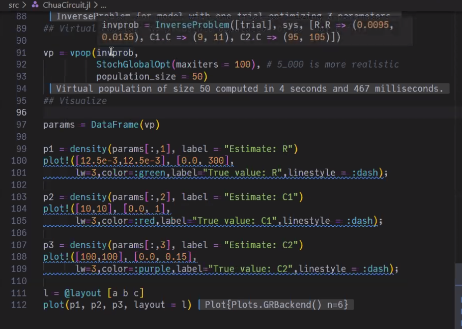

We can see that even with a low number of iterations we're still capturing the true values pretty well in the virtual populations.
To reiterate, we first created the model with ModelingToolkit, the acausal modeling framework, we had to create only one component from scratch, we were able to leverage the oneport component from the electrical module. We connected all of the model components, we got some optimized code, and then we used that to generate some synthetic data and create this inverse problem. Directly from there, we can create this virtual population. This is the whirlwind overview of what a Model Optimizer workflow may look like.
Let's take another look at an example of a building model. This building model is an 81-room building, it's 9 by 3 by 3, cooled by circulating water, in the graphs is data from real meteorological data.
The image on the left, the building, correlates to the vertical line moving across the graphs on the right. On the top we get the room temperature for each room, on the bottom the ambient temperature. There are 7 peaks and valleys on the bottom, which correlates with 7 sunrises and falls during a week. We can see the time of day and how it affects both ambient temperature and room temperature.
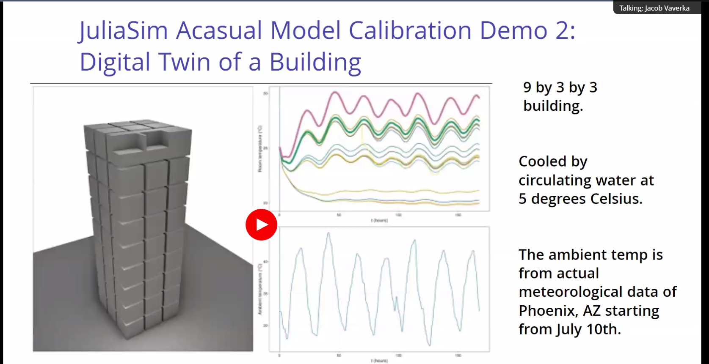
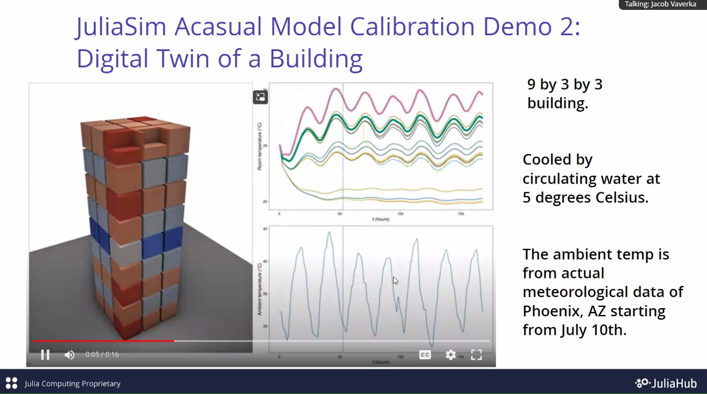
How might we construct a model like this with an acausal modeling framework like modelingtoolkit? After we load some packages, like modelingtoolkit, differentialequations, some things to handle experimental data like DataFrames and CSV, a data interpolation package, we're also going to pull a package of components that we've developed to break down this problem into smaller portions, very similar to a standard library. So, after we've done that, and we load our meteorological data and slice the data, get everything ready, we can start setting our structural parameters for the model and the building. We set some initial temperatures for the building, the temperatures are measured in kelvin in the model. After we've also set our initial conditions, we can do some component setup. Very similar to how we would just pull in the capacitor, the inductor, the ground source, we can pull in these interpolated sources, constant sources, step sources, we have a function to create a HEX fan there. We can create each one of these components and we can create many of them in one go, which is this array syntax.
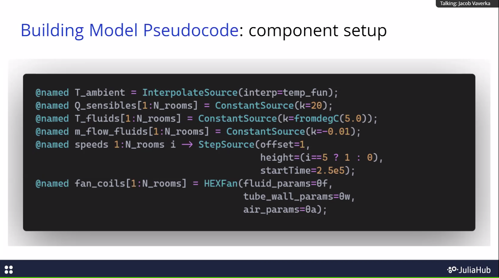
Then, just like before, instead of writing this massive model by hand, which comes out to be over 17000 equations, we can focus purely on the relationships between these components. So this model is built up by the composition of each one of these components seen before. The overall dynamics of this building model fall out of the cumulative behavior of that composition. Of all the individual components, of all their dynamics, and of all the connections that we've declared here you can get the dynamics of the full model. We only worry about the relationships, the connections between these things. This happens to happen in a concise, fast way because we're able to do this in a for loop so we're gonna go over each room, set up these equations, these connections for every room in the building without having to code this by hand. The output is an ODESystem.
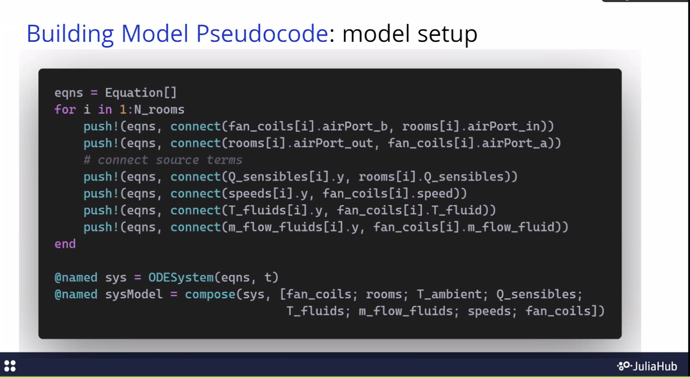
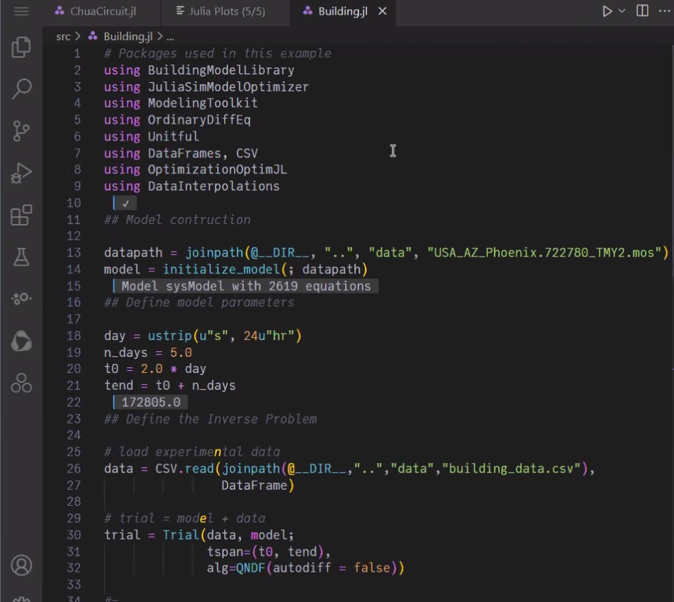
Loading the model directly from data now.
Note there's 2619 equations, a massive reduction from the 17000 equations we started with.
The model we get out of the initialize_model call has already went through all the various reduction algorithms to get this structurally and algebraically simplified.
We now got a nice lean model to work with, we now want to define some model parameters, this is where the unit conversion package comes into nicely, seconds to hours, kelvin to Celsius, leaves little room for developer error.

We're going to do the same 3 steps. Load the experimental data, define our trials, then define the inverse problem.
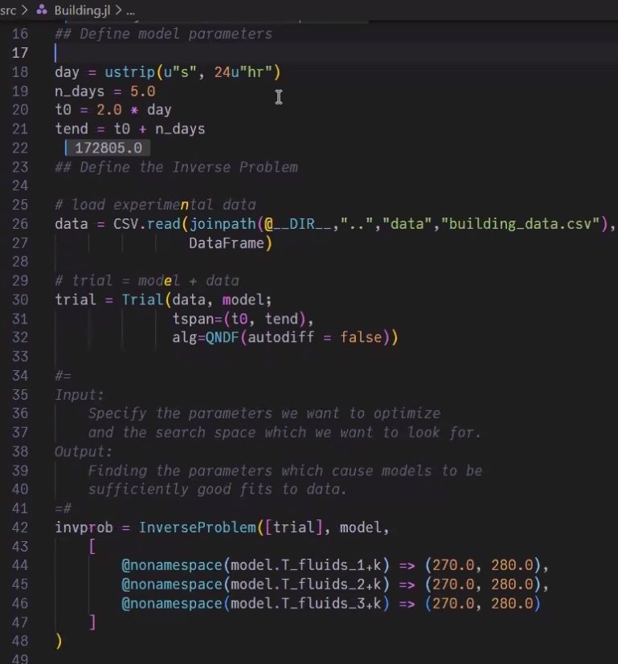
Then, we can calibrate the model. calibrate comes from model optimizer. Then, we just convert the results from Kelvin to Celsius and we have the parameter estimation for this model.
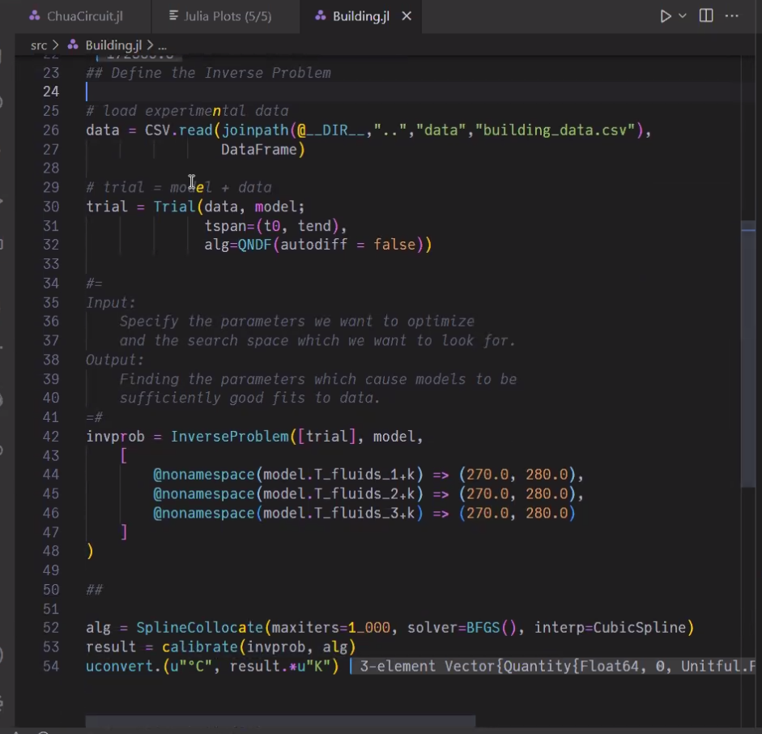
All these methods shown here are designed for large-scale simulations to fit to data. It's a form of curve fitting that is made for robustness to nonlinear behavior. In the questions "how do you do this chaotic system", they are well-founded. Because for example, chaotic system, you have O(1) error in your simulation, if you simulate it for multiple lyapunov times. The techniques here are robust to these behaviors. They make use of multiple shooting and they make use of things like collocation to be able to be fitting in the derivative space in a way that does not have this compounding of errors. If you naively slap an ODE solver into BFGS and then just directly fit and then hope and pray, a chaotic system is an example of where this approach would fail. This building example shows the robustness of the methods.